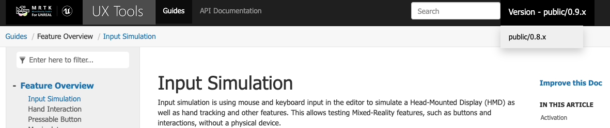

Welcome to UX Tools

UX Tools is the first MRTK-Unreal component to be released and is currently only supported on HoloLens 2. The component plugin includes code, blueprints, and example assets of common UX features for input simulation, hand interaction actors, press-able button components, manipulator components and follow behavior components.
Development
If you're new to MRTK or Mixed Reality development in Unreal, we recommend starting at the beginning of our Unreal development journey, which was specifically created to walk you through installation, core concepts, and usage.
Caution
The Unreal development journey currently uses UX Tools 0.11.x and Unreal 4.26.0 or later. If you're working with other configurations it's still recommended that you start there, but you can also refer to the installation instructions.
Documentation Versioning
We have complete documentation for all release versions, but we recommend using the highest numbered public release branch for stability. Versions can be selected from the dropdown at the top-right of the screen:

Getting help
If you run into issues caused by UX Tools or have questions about how to do something, please file an issue on the GitHub repo.